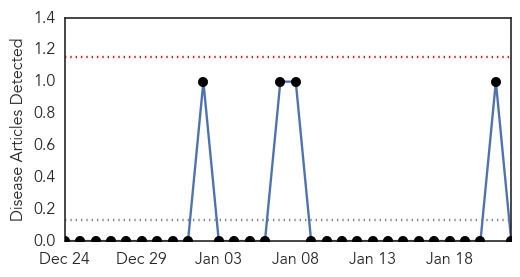
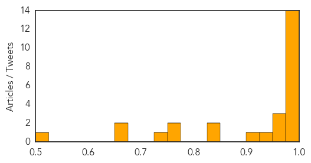

West Nile Virus
30-Day Web Trend
0 alerts, 0 warnings

30-Day Twitter Trend
Article Locations


Article Confidences

Top Articles:
-
No articles found for Jan 22, 2015
Top Tweets:
-
No tweets found for Jan 22, 2015
Swine Flu
30-Day Web Trend
30-Day Twitter Trend
0 alerts, 0 warnings

Article Locations
Article Confidences
Top Articles:
- 1.000
- Read Health News & Articles at TheHealthSite.com
- 0.999
- Swine Flu Alert puts Telangana Administration on High Alert
- 0.999
- Swine flu claims two lives in Hyderabad
- 0.998
- Central team assesses swine flu situation in Hyderabad
- 0.998
- Swine flu claims four more lives
- 0.998
- Central team assesses swine flu situation in Hyderabad
- 0.996
- Swine flu outbreak in Telangana
- 0.994
- MP: Gag order on pvt clinics, nursing homes alerted on swine flu deaths
- 0.993
- Now, doctors scared of swine flu in Hyderabad
- 0.991
- Suspected swine flu patient recovers
- 0.990
- 42-year-old man dies of swine flu at Aurangabad, Maharashtra
- 0.985
- 5 Members of Lucknow Family Test Positive for Swine Flu
- 0.983
- Preventive Vaccine Helps Check Flu
- 0.981
- Swine Flu Death: KCR Seeks Centre’s Help
- 0.973
- Special team to visit swine flu-hit Telangana, Video Gallery
- 0.970
- Swine Flu: 19 Die in Telangana, State Seeks Centre's Help
- 0.967
- Naidu enquires about swine flu cases
- 0.948
- Nadda assures Telangana of all help
- 0.917
- Director of Health transferred for flu mishandling
- 0.845
- Shift Swine Flu Patients to Bibinagar Hospital: Bandaru
- 0.835
- CM Snubs Rajaiah, Wants NIMS Chief's Brief on Virus
- 0.775
- 11 die in Telangana, state seeks Centre's help
- 0.757
- Man succumbs to swine flu
- 0.729
- Five Of A Family Test Positive For Swine-flu
- 0.662
- Swine Flu Effect: Axe Falls on Telangana Health Director
- 0.654
- Senior delegation to take stock of rising swine flu cases in Telangana
- 0.516
- Swine flu: KCR asks pvt hospitals to chip in
Top Tweets:
-
No tweets found for Jan 22, 2015